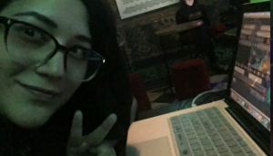
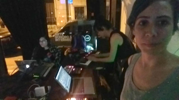
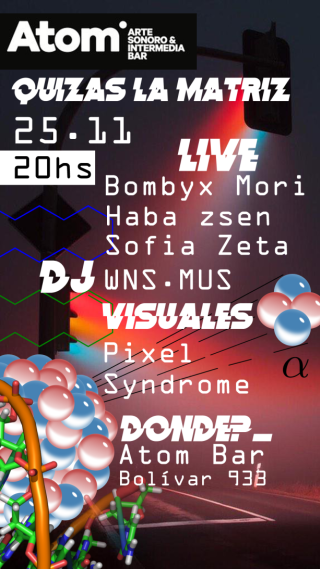

Categoría:
NOSTALGIA




Panfleto del evento "Quizás la matriz".
Febrero 2020
Atom
Un famoso empleado de Nintendo llamado Kristian Wilson una vez dijo:
Si los videojuegos influenciaran a los jóvenes, en unos años estarán todos en habitaciones oscuras con luces destelleantes comiendo pastillas mientras escuchan música electrónica repetitiva para divertirse.
Atom era una casa legendaria en donde se celebraban todas las distintas clases de música electrónica, sin importar si era noise o trance. Quienes como yo recordamos el espacio con cariño pensamos en su espíritu de casa familar, como un lugar donde se podía relajar cualquiera luego de un árduo día en el trabajo, sentarse en sus bancas o sillones y dejarse llevar por las olas del sonido.
Recuerdo varias noches en Átom, el cual conocí al empezar mi carrera como artista multimedia haciendo Vjing para el colectivo de música Vaporwave 'Vaporcrew ´95' allá por el 2017. Pasé muchísimas fechas en Átom, no sólo haciendo visuales para este grupo sinó también para otros artistas, en ciclos experimentales como ser 'Dialéctica de las formas' o 'Quizás la matriz'. A veces me pregunto si Atom no estaba demasiado adelantado para su momento, y también cuestiono qué habrá sido del mismo si no fuera por la economía argentina.
Me duele pensar que en un lugar con tanto talento, y donde siempre recuerdo la pasión que compartía todo el equipo de Atom por la música, haya sido derrocado por algo tan frío como es la economía, esta que sólo vé números en vez de éxito y emociones despertadas. Esas fechas me quedarán grabadas en la memoria y por lo menos me sirven para sumar a la nostalgia que tienen esas callecitas de San Telmo, cada vez que paso por donde ántes se encontraba este antiguo templo de los amantes del sonido moderno. Hasta siempre, Atom.

Panfleto del evento "Dialéctica de las formas".

Rating: